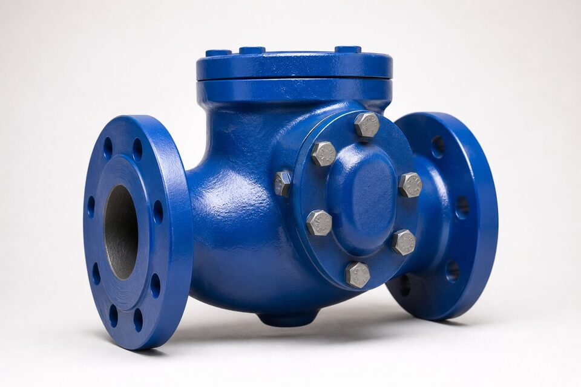

وظیفه شیر یکطرفه در خط
شیر یکطرفه وظیفهای ساده اما حیاتی دارد: اجازه عبور جریان در یک جهت و جلوگیری از برگشت آن. در خطوط پمپ، مانع برگشت سیال و معکوس شدن دور پمپ میشود؛ در خطوط چندمنبعه، از اختلاط سیالهای متفاوت جلوگیری میکند؛ و در زنجیره کمپرسور، مانع برگشت گاز به بدنه کمپرسور پس از توقف میگردد. چون این شیر هیچ محرکی ندارد، تمام رفتار آن به طراحی دیسک، لولا و فنر وابسته است و انتخاب اشتباه طرح، خود را به شکل کوبش، نشتی یا ضربه قوچ نشان میدهد.

انواع اصلی و ساختار هر یک
- سوئینگ: دیسک روی لولا حول محوری بالای نشیمنگاه میچرخد؛ افت فشار کم، مناسب خطوط افقی.
- لیفت: دیسک مانند پیستون در مسیر جریان بالا و پایین میشود؛ آببندی دقیقتر، نیازمند جهت نصب مشخص.
- توپی: ساچمهای که روی نشیمنگاه مینشیند؛ مناسب سیالهای کثیف و خمیری.
- دوپلیت: دو دیسک نیمه با فنر مرکزی؛ فشرده، سبک و با بسته شدن سریع.
- آکسیال (دیسک فنری): بسته شدن بسیار سریع برای حفاظت کمپرسور و پمپ.
معیارهای انتخاب بر اساس سرویس
انتخاب طرح به چهار عامل اصلی بستگی دارد: جهت و پروفایل جریان، افت فشار مجاز، سرعت بسته شدن مورد نیاز و وضعیت نصب. در خطوط افقی با جریان پایدار، سوئینگ سادهترین انتخاب است. در ایستگاههای پمپاژ که برگشت سریع مهم است، دوپلیت یا آکسیال ترجیح داده میشود. در خطوط عمودی با جریان رو به بالا، طرح لیفت یا فنردار الزامی است چون سوئینگ بدون جریان کافی بسته نمیماند. برای سایزهای بزرگ و فشارهای بالا، مقایسه وزن و قیمت دوپلیت با سوئینگ معمولاً به نفع دوپلیت تمام میشود.
مقایسه سریع طرحها
| معیار | سوئینگ | لیفت | دوپلیت |
|---|---|---|---|
| افت فشار | کم | متوسط | کم |
| سرعت بسته شدن | کند | متوسط | سریع |
| حساسیت به ضربه قوچ | بالا | متوسط | کم |
| نصب عمودی | نامناسب | با فنر مناسب | مناسب |
| سایز رایج | متوسط و بزرگ | کوچک و متوسط | بسیار کوچک تا بزرگ |
مقایسهای فشرده برای انتخاب اولیه؛ جزئیات در مقاله مقایسه طرحها آمده است.
نکات نصب که عمر شیر را تعیین میکنند
شیر یکطرفه حساسترین شیر به محل نصب است. بین پمپ و شیر یکطرفه باید فاصلهای حداقل به اندازه چند قطر لوله باشد تا جریان آرام شود. نصب بعد از زانو یا سهراهی بدون فاصله، جریان گردابی ایجاد کرده و دیسک را دچار نوسان میکند. جهت فلش روی بدنه باید دقیقاً با جهت جریان منطبق باشد و در طرحهای لیفت، وضعیت افقی یا عمودی مطابق دفترچه سازنده رعایت شود. در نقاطی که امکان برگشت ستون سیال با سرعت زیاد وجود دارد، استفاده از طرح با میراگر یا فنر کنترلشده عمر خط را تضمین میکند.
خرابیهای رایج و ریشه آنها
- کوبش و صدای ضربه: برگشت جریان سریع و بسته شدن دیرهنگام دیسک؛ درمان با طرح سریعتر یا میراگر.
- نشتی نشیمنگاه: سایش ذرات یا خوردگی؛ در سرویسهای ساینده متریال سختتر انتخاب کنید.
- گیر کردن دیسک: نصب در جریان ناپایدار یا تغییر ناگهینی دما که انبساط بدنه را به همراه دارد.
- خوردگی لولا: در طرح سوئینگ، پین لولا نقطه ضعف است و باید با متریال مناسب از آن محافظت شود.
مدارک و تستهای تحویل
هر شیر یکطرفه باید با مدارک حداقل شامل گواهی مواد، گزارش تست بدنه و گزارش تست عملکرد ارائه شود. تست بدنه معمولاً با فشاری بالاتر از فشار کاری انجام میشود و تست عملکرد، باز و بسته شدن روان دیسک را تأیید میکند. در سرویسهای حساس، معیار نشتی نشیمنگاه نیز باید در سفارش ذکر شود؛ چون در بسیاری از مراجع، تست نشیمنگاه شیر یکطرفه الزامی نیست و فقط در صورت توافق انجام میشود. در استعلام، ذکر سرویس واقعی و شرایط برگشت جریان، به سازنده امکان میدهد طرح مناسب را پیشنهاد دهد.
برنامه نگهداری و قطعات مصرفی
شیرهای یکطرفه از معدود تجهیزاتی هستند که در حالت عادی هیچ اپراتوری با آنها کار نمیکند و به همین دلیل خرابی آنها معمولا دیر کشف میشود. یک برنامه نگهداری موثر، بازرسیهای دورهای بر اساس اهمیت سرویس تعریف میکند: در خطوط حیاتی، پایش صدای غیرعادی و افت فشار در دو طرف شیر به صورت روتین انجام میشود و در توقفهای برنامهریزیشده، بازرسی داخلی دیسک و نشیمن در دستور کار قرار میگیرد. موجودی قطعات مصرفی مانند فنرها، دیسکها و واشرها برای سایزهای پرمصرف نیز باید بر اساس زمان تحویل سازنده برنامهریزی شود تا خرابی یک شیر کوچک، خط بزرگی را متوقف نکند.
جمعبندی
شیر یکطرفه درست، شیری است که طرح آن با پروفایل جریان خط انتخاب شده باشد: سوئینگ برای خطوط افقی پایدار، لیفت فنردار برای عمودی، دوپلیت یا آکسیال برای نقاطی که سرعت بسته شدن حیاتی است. با رعایت فاصله نصب، انتخاب متریال متناسب با سیال و الزام مدارک تست، این شیر سالها بدون نیاز به تعمیر کار میکند و از پمپها و کمپرسورهای گرانقیمت محافظت مینماید.
سوالات رایج
شیر یکطرفه چگونه بدون فرمان کار میکند؟
نیروی جریان سیال دیسک را باز میکند و با کاهش یا معکوس شدن جریان، وزن دیسک به همراه فنر یا نیروی برگشتی، آن را میبندد. هیچ اپراتور یا محرکی در کار نیست.
ضربه قوچ چیست و چرا در شیرهای یکطرفه مهم است؟
بسته شدن ناگهانی دیسک پیش از توقف کامل ستون سیال، موج فشار مخربی ایجاد میکند. انتخاب طرح با بسته شدن سریع و کنترلشده، اصلیترین راه مقابله است.
کجا نباید شیر یکطرفه نصب کرد؟
بلافاصله بعد از پمپ بدون فاصله مناسب و در نقاطی که جریان نوسانی شدید دارند. نوسان باعث کوبش دیسک و سایش زودرس نشیمنگاه میشود.
در استعلام چه مواردی الزامی است؟
سایز، کلاس فشاری، متریال بدنه، طرح دیسک، نوع فنر در صورت نیاز، متریال نشیمنگاه و مرجع تست. ذکر سرویس واقعی به انتخاب صحیح کمک میکند.
مطالب مرتبط
- مقایسه طرحهای سوئینگ، لیفت و دوپلیت
- راهنمای شیرهای یکطرفه دوپلیت
- راهنمای جامع شیر دروازهای
- متریال بدنه شیرآلات
- راهنمای تست و معیارهای نشتی شیرآلات
با ذکر سایز، کلاس فشاری، طرح دیسک و متریال، شیر یکطرفه منطبق با مرجع تست به همراه مدارک عرضه میشود.
مشاهده صفحه محصول ثبت RFQ همین محصولتامین این تجهیزات را به پیشرو تجهیز فرتاک بسپارید
شرکت پیشرو تجهیز فرتاک تامینکننده تخصصی تجهیزات صنعتی برای پروژههای نفت، گاز، پتروشیمی، فولاد و نیروگاهی است. برای دریافت پیشنهاد فنی و قیمت، استعلام (RFQ) خود را ثبت کنید تا کارشناسان مهندسی فروش در کوتاهترین زمان پاسخ دهند.
- تامین شیرآلات صنعتیخانواده کامل شیر با گواهی مواد و تست
- تامین تجهیزات صنایع نفت و گازپکیج مواد مطابق وندورلیست